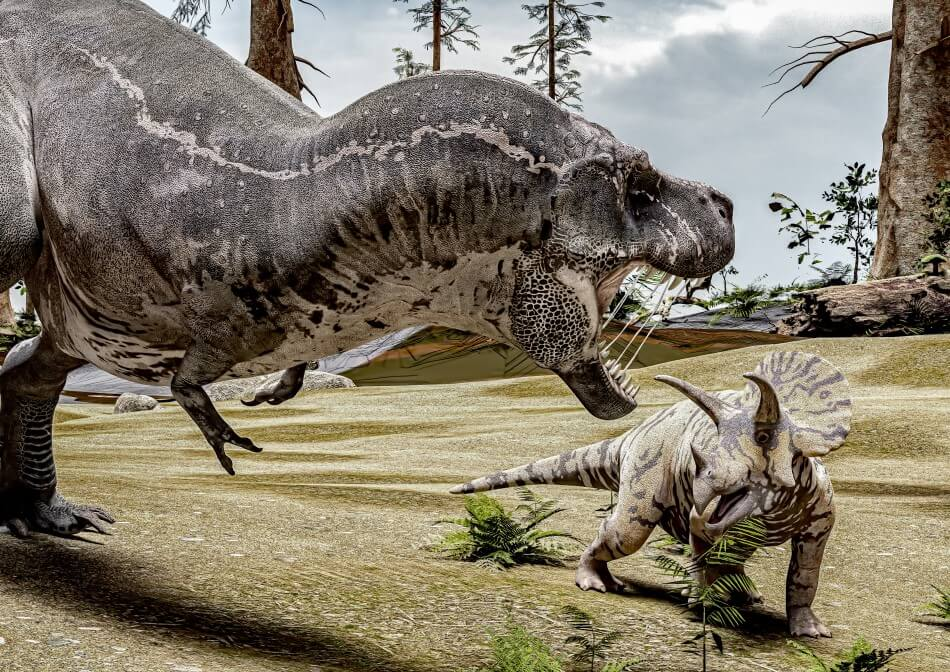

Triceratops are one of the most defensive dinosaurs that roamed.
The triceratops traveled in a herd to have an advantage.When the triceratops gets attacked they form a circle with adults on the outsite and babys on the inside.
Even if it is 5 trex the trex ussally back off because they know they cant win.The giant thing on their head they might look dumb but they can withstand any bite force.The t rex cant get past the defense of this creature because it needs to get behind but it can't.
This dinosaur dosen't need all of the herd because it can even 1v1 a t rex because one stab and the t rex is almost dead.
